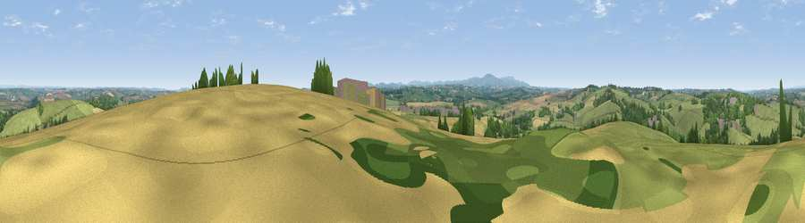

Viewpoint near Bow
#14680 in England · top 20% of its area beats it · near Bow · path 110 mWhere it is
The exact computed spot (SS 72725 02925). Click the marker for map links.
Public access: the nearest public right of way is about 110 m away — the final stretch may cross private land. Computed from Natural England's CRoW access layer and OpenStreetMap rights of way — not the legal definitive map. Always verify locally.
The view, rendered

A 360° render of this exact spot computed from the terrain model, tree cover and land cover — summer colours, afternoon light, calibrated against photographs of famous viewpoints. Real trees, hedges and buildings will differ in detail.
The panorama
Grey silhouette: terrain skyline in each direction (720 bearings, Earth curvature and refraction included). Dashed green: skyline with trees (+15 m) and buildings (+8 m) as obstacles. Blue strip: how far the ground is visible on each bearing.
Where the view opens
Wedge length = distance to the farthest visible ground on that bearing (vegetation-aware). Rings at 10, 25 and 50 km.
What fills the view
67% grassland · 18% cropland · 13% woodland · 2% built-up
Angular shares of the visible panorama (visual magnitude), not map area. Landscape diversity 0.40 (0–1 Shannon).
Key numbers
More beautiful places nearby
The staircase of upgrades: each row has a higher view potential than everything closer. Driving times are estimates from straight-line distance, calibrated against real road routing — check an actual route before setting out.
| Place | Direction | Drive | Score |
|---|---|---|---|
| Serstone Hill | E · 1 km | ~2 min | 61.1 |
| Viewpoint near Copplestone | E · 6 km | ~13 min | 62.3 |
| Woolsgrove Hill | E · 7 km | ~14 min | 64.0 |
| Viewpoint near Venny Tedburn | ESE · 10 km | ~19 min | 70.1 |
| Viewpoint near Sticklepath | SW · 13 km | ~24 min | 73.5 |
| Viewpoint near Drewsteignton | S · 14 km | ~25 min | 74.4 |
| Viewpoint near Drewsteignton | S · 14 km | ~25 min | 75.1 |
| Butterdon Hill | S · 15 km | ~26 min | 76.4 |
50.81185, -3.80790 · source: screening · position refined by local search. Computed location — check access rights before visiting.